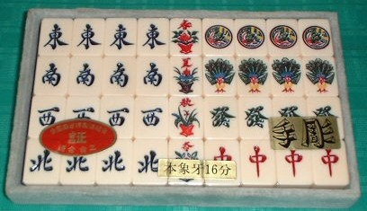

新牌といっても、昨日や今日製造されたわけではい。製造されたのは、昭和35年から昭和40年頃のこと。セロファンの封も切ってないまったくの未使用（日本政府による税金証紙つき）。
最後の名人彫り師と云われる故・石川茂氏によって彫られたもの。当時の市販価格は35万円前後であったらしいがよく分からない。しかし昭和30年代後期、大卒初任給は３万円前後と記憶しているから、そのとき35万円前後というのは恐ろしい値段だ。
「正面１索」は石川彫りの特徴である（正面１索を彫った人は他にもあるので、正面１索がすべて石川茂氏の制作というわけではない）。１筒は細かい竜の彫り物で（眼のところに金泥が使用してある。さすがは名人という感じ。もちろん点棒も起家マークもサイコロ（４個）もすべて象牙だ。この起家マークの、すべすべした感じがいい。

象牙とか牛骨牌の厚さは「分（ふん）」という単位で表す。１分は0.8mmであるから、15分でちょうど12mm。象牙部分のみの厚さで「15分」とあれば正15分という。正15分で高級象牙牌、しかしこの牌は正16分(12.8mm）もある最高級象牙牌。牌の裏打ちの竹もすべて正目（まさめ）という逸品。
現在は手彫り牌そのものが製造されなくなったので、こういう単位を耳にすることも少なくなった。ついでながら、骨董の世界では象牙は象牙と云わず、単に「牙（げ）」ということが多い。牛骨や象骨などは、単に「骨（こつ）」だ。
|